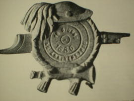

Storia A. N.B.
STORIA DELL'ASSOCIAZIONE NAZIONALE BERSAGLIERI

Il primo nucleo originatore della futura Associazione nasce in Torino, il 18 giugno 1886 (cinquantenario della fondazione del Corpo) con il nome "Comizio Veterani Bersaglieri". Il 19 maggio del 1887 si costituisce a Milano il secondo nucleo con il nome di "Società di mutuo soccorso fra bersaglieri in congedo". La fusione dei due nuclei – che avviene il 1° gennaio 1889 – dà origine, inizialmente, all'Associazione Generale ex Bersaglieri con Mutuo Soccorso e Cassa di Previdenza e, successivamente (1° gennaio 1911) a "Associazione di Mutuo soccorso tra Bersaglieri in Torino". Nel 1921, in occasione della tumulazione della salma del Milite Ignoto (4 novembre), le associazioni bersaglieri (sorte intanto in varie parti d'Italia) più rappresentative – Torino, Milano, Brescia, Trieste, Bologna, Roma e Napoli – costituiscono la "Federazione Nazionale Bersaglieri". Il 30 giugno 1924, a Bologna, in occasione di un grande Raduno, nasce l'Associazione Nazionale Bersaglieri. Nel 1938, subendo una trasformazione di carattere ordinativo, l'Associazione si trasforma in "Reggimento Bersaglieri d'Italia Alessandro La Marmora" al quale, con decreto 18 luglio 1939, viene riconosciuto propria "personalità giuridica".
Dopo il conflitto, con decreto 2 agosto 1943, tale Reggimento viene soppresso (unitamente ad altre Associazioni d'Arma) e nominata una "Gestione Commissariale" alle dirette dipendenze del Ministero della Guerra. È solo nel 1946, con l'opera meritoria di un Comitato creato appositamente dal Gen. Enrico BOARO, pur con tante difficoltà, che l'Associazione viene ricostituita, con il preciso obiettivo statutario di essere apolitica. Si hanno, quindi, le prime elezioni con la nomina a Presidente Nazionale del gen. C.A. Alfredo BACCARI. Finalmente, il 9 aprile 1953, con decreto del Presidente della Repubblica n. 676 (GU 14 SET. 1953), viene riconosciuta e sanzionata ufficialmente l'attuale denominazione di "Associazione Nazionale Bersaglieri". In tale occasione viene approvato un nuovo Statuto associativo. Negli anni che seguono, lo stesso Statuto subisce numerosi aggiornamenti derivanti dal grande sviluppo dell'Associazione che passa dalle 24 Sezioni iniziali del 1949 alle 581 attuali, di cui 1 in Canada.
Realtà consolidata dell'Associazione Nazionale Bersaglieri sono inoltre le circa 70 Fanfare associative dislocate su tutto il territorio nazionale che, fedeli alla storia dei fanti piumati, ne mantengono vive le tradizioni musicali, anche grazie al coinvolgimento dei giovani attraverso le scuole musicali. L'ANB collabora inoltre alle attività benefiche promosse da AIL, AISM, Banco alimentare e Telethon. Al fine di raffittire ed efficientare la rete della Protezione Civile ANB, è stato recentemente costituito un Coordinamento Nazionale della Protezione Civile cui fanno capo i circa 30 nuclei attualmente in attività. L'ANB è attivamente presente sui social con le proprie pagine associative. L'organo ufficiale dell'Associazione è il bimestrale "Fiamma Cremisi", che da oltre 70 anni raggiunge tutti i soci e le principali istituzioni Italiane.
Il Medagliere Nazionale dell’ANB raccoglie :
– 390 Ordine Militare d’Italia ;
– 184 MOVM (Medaglie d’Oro al Valor Militare) ;
– 5622 MAVM (Medaglie d’Argento al Valor Militare ) ;
– 10.054 MBVM (Medaglie di Bronzo al Valor Militare ) ;
– 1 MOVC (Medaglia d’Oro al Valor Civile ) ;
– 3000 Croci di Guerra al Valor Militare ;
– 1 Ordine dei Santi Maurizio e Lazzaro